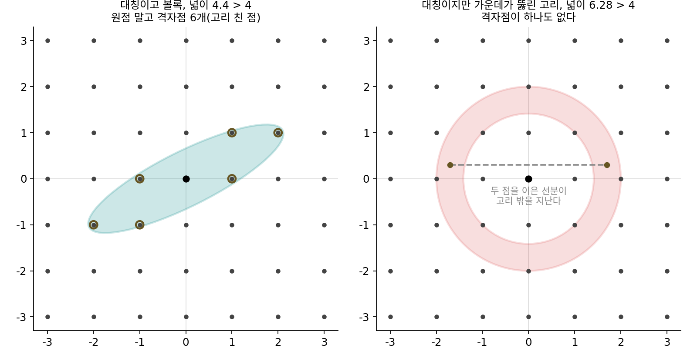
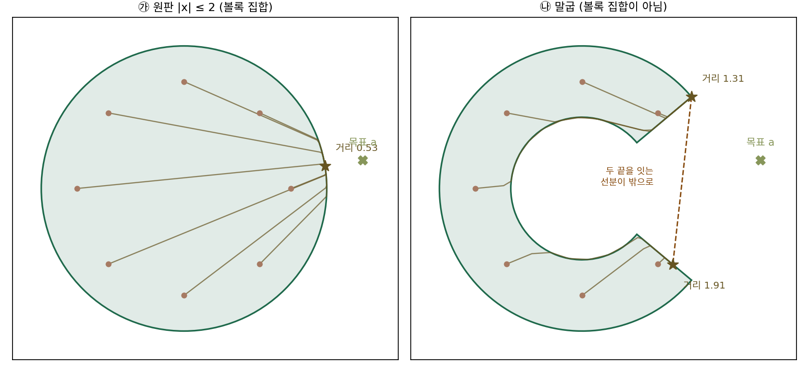
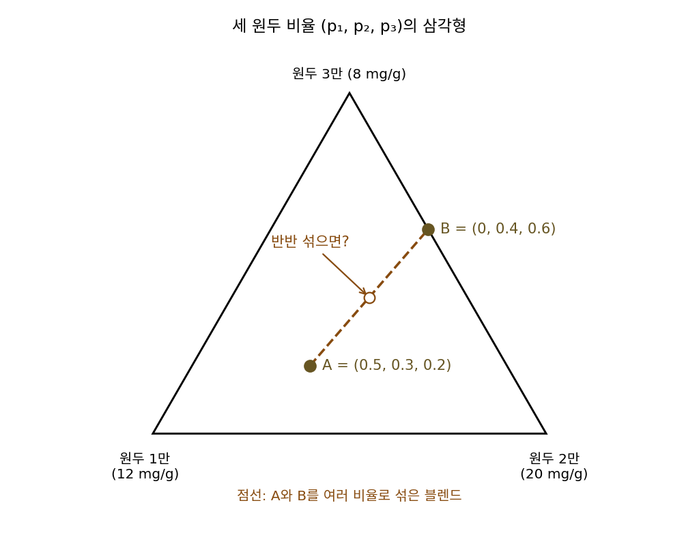
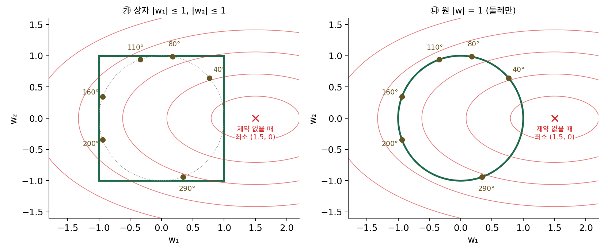

볼록 집합: 제약 안에서도 극소는 최소
지금까지는 파라미터가 어디로든 움직일 수 있었지만, 실제 문제에는 제약이 붙는 일이 많다. 여러 모델의 예측을 섞는 비율은 0 이상이고 더해서 1이어야 하고, 드롭아웃 논문처럼 은닉 유닛마다 가중치 벡터의 길이에 상한을 두기도 한다. 이런 문제를 경사하강으로 풀 때는 한 스텝 내려간 점이 제약 밖으로 나가면 제약 안의 가장 가까운 점으로 되돌리는 일을 스텝마다 덧붙인다. 그런데 극소가 곧 최소라는 증명은 극소점에서 더 낮은 점까지 현을 그을 수 있다는 데 기댔다. 제약이 있으면 그 현 위를 걸어갈 수 없을지도 모르는데, 볼록 함수를 제약 안에서 줄일 때도 극소는 곧 최소일까?
역사: 민코프스키가 본 「선분이 안에 있다」는 성질
「두 점을 이은 선분이 영역 안에 있다」는 성질을 일찍부터 깊이 쓴 분야 가운데 하나는 뜻밖에 수론이었다. 독일의 헤르만 민코프스키(Hermann Minkowski)는 2차 형식의 최솟값을 따지다가, 평면이나 공간의 어떤 영역 안에 정수 좌표의 점(격자점)이 들어 있는지를 영역의 넓이나 부피로 가늠하는 방법을 찾았다. 그 논증이 통하려면 영역에 꼭 필요한 성질이 하나 있었는데, 영역 안의 두 점을 이은 선분이 늘 영역 안에 있어야 한다는 것이었다. 그는 1891년 무렵에 이것이 열쇠라는 것을 알아보았고, 1896년 『수의 기하학(Geometrie der Zahlen)』 첫 부분을 냈다(나머지는 그가 세상을 떠난 뒤인 1910년에 나왔다). 그 대표 결과인 민코프스키 정리는, 원점에 대해 대칭이고 선분이 늘 안에 있는 평면 영역의 넓이가 4보다 크면 원점 말고도 격자점이 반드시 들어 있다는 것이다. 가운데가 뚫린 고리 모양은 넓이가 아무리 커도 이 정리를 쓸 수 없다. 최적화에서도 「선분이 안에 있다」는 성질은 영역 안의 두 점 사이를 영역을 벗어나지 않고 곧게 오갈 수 있게 해 준다.


선분이 안에 있다는 성질은 보면 바로 알잖아요. 원판은 되고 고리는 안 되고. 이걸 알아보는 데 몇 년씩 걸릴 일인가요?

민코프스키가 풀려던 물음부터 볼까요? 어떤 영역 안에 격자점이 있는지 알고 싶어요. 영역이 크고 모양이 제멋대로라면 어떻게 확인하죠?
격자점을 하나씩 넣어 보면… 아, 영역이 크면 확인할 점이 끝없이 늘어나네요.

하나씩 세지 않고 넓이만 보고 말하려면 모양에 무언가를 가정해야 했겠네요. 고리처럼 가운데가 뚫리면 넓이가 커도 원점 둘레가 비어 있을 수 있으니까.

그 가정을 고르는 게 어려운 부분이었어요. 고리도 원점에 대해 대칭이고 둘레가 매끈하니, 대칭이나 매끈함으로는 모자라요. 「두 점 사이 선분이 안에 있다」는 성질을 열쇠로 알아본 게 1891년 무렵이고, 책으로 낸 건 1896년이에요.

격자점을 찾으려고 고른 성질이 최적화에서는 두 점 사이를 곧게 오가는 성질이 된다면, 제약 안에서 경사하강이 멈춘 점에 대해서는 「선분이 안에 있다」는 성질이 무엇을 보장해 줄까요?
원판과 말굽
제약의 모양만 바꿔 보려면 함수는 답을 그림으로 알 수 있는 가장 간단한 것이 좋다. 목표점 a = (2.5, 0.4)에 가장 가까운 점을 찾는 문제, 곧 f(x) = ½|x − a|²를 줄이는 문제를 고르자. 이 함수는 강볼록 그릇이다. 견줄 제약 둘 가운데 ㉮는 반지름 2인 원판이고, ㉯는 반지름 1과 2 사이의 고리에서 목표 쪽(오른쪽 ±40°)을 잘라 낸 말굽이다. 반지름 1.5인 원 위 여덟 방향에서 출발해, 학습률 0.1로 한 스텝 내려간 뒤 제약 밖이면 제약 안의 가장 가까운 점으로 되돌리기를 2000번 되풀이했다(말굽에서는 입구에 놓인 0° 출발점을 뺐다).
| 출발 방향 | ㉮ 원판의 도착점 | 목표까지 거리 | ㉯ 말굽의 도착점 | 목표까지 거리 |
|---|---|---|---|---|
| 45°, 90°, 135°, 180° | (1.9749, 0.3160) | 0.5318 | (1.5321, 1.2856) | 1.3119 |
| 225°, 270°, 315° | (1.9749, 0.3160) | 0.5318 | (1.2701, −1.0657) | 1.9134 |
원판에서는 여덟 출발점이 모두 원판 가장자리의 한 점에 닿는다. 원점에서 목표 쪽으로 반지름 2만큼 간 점이고, 목표까지 거리는 |a| − 2 = 0.5318이다. 말굽에서는 위쪽 출발점이 위쪽 끝에, 아래쪽 출발점이 아래쪽 끝에 닿는다. 아래쪽 끝은 목표까지 거리가 1.9134로 위쪽 끝(1.3119)보다 0.6 멀지만, 아래쪽 끝에서 말굽을 따라 어느 쪽으로 조금 움직여도 거리가 늘어난다(각도로 0.02만큼 더 돌리면 1.9465). 아래쪽 끝은 제약 안에서 둘레보다 낮은, 그러나 가장 낮지는 않은 점이어서, 같은 강볼록 함수인데도 제약의 모양 때문에 극소와 최소가 갈렸다.
무엇이 달랐을까? 말굽의 두 끝을 선분으로 이으면 가운데 점 (1.4011, 0.1099)은 말굽의 입구, 곧 잘라 낸 곳에 떨어진다. 아래쪽 끝에서 위쪽 끝으로 곧게 걸어가는 길이 제약 밖을 지나는 것인데, 원판에서는 어느 두 점을 이어도 선분이 원판을 벗어나지 않는다. 이렇게 안의 어느 두 점을 이은 선분도 늘 안에 있는 집합을 볼록 집합 (두 점 사이를 곧게 오갈 수 있는 집합 / convex set)이라 한다.
볼록 함수를 볼록 집합 위에서 줄이면 극소가 곧 최소라는 증명은, 제약 없는 볼록 함수에서 극소점과 더 낮은 점을 현으로 이었던 증명을 거의 그대로 옮긴 것이다. 극소점 x̂보다 낮은 점 x′이 제약 안에 있다면, 둘을 잇는 선분은 볼록 집합이라 제약 안에 있고, 그 선분 위에서 함수는 현 아래에 있으므로 x̂ 바로 옆에 더 낮은 점이 생긴다. 말굽에서 이 증명이 무너진 자리는 「선분이 제약 안에 있다」는 한 줄이다. 스텝마다 제약 안의 가장 가까운 점 ΠC로 되돌리는 경사하강, xₖ₊₁ = ΠC(xₖ − η∇f(xₖ))를 사영 경사하강이라 부르는데, 제약이 볼록 집합이면 가장 가까운 점이 하나로 정해져 이 되돌리기가 늘 뜻을 가진다.
볼록 집합은 쉽게 만들어진다. 일차식 부등식 하나(p₁ + p₂ ≤ 1 같은)가 정하는 영역은 볼록 집합이고, 볼록 집합 여러 개의 공통 부분도 볼록 집합이다. 그래서 「모두 0 이상이고 더해서 1」이라는 확률의 제약, 「길이가 c 이하」라는 공의 제약은 볼록 집합이다.

ML에서: 드롭아웃 논문의 길이 상한
니티시 스리바스타바(Nitish Srivastava), 제프리 힌턴(Geoffrey Hinton)과 동료들은 2014년 드롭아웃 논문 「드롭아웃: 신경망의 오버피팅을 막는 간단한 방법」에서 은닉 유닛마다 들어오는 가중치 벡터 w의 길이를 |w| ≤ c로 묶었다. 업데이트한 w가 반지름 c인 공 밖으로 나가면 공 표면으로 되돌리는 방법을 드롭아웃과 함께 쓴 것이다. 그들은 이것을 「최대 노름 정규화(max-norm regularization)」라 불렀고, c는 검증 데이터로 고르는 값이라고 적었다. 손글씨 숫자(MNIST) 실험에서 드롭아웃과 ReLU를 쓴 신경망의 오류율이 1.25%였는데, 가중치 길이의 상한을 더하자 1.06%로 내려갔다고 보고했다. 신경망의 손실은 볼록이 아니므로 앞의 보장이 통하지는 않지만, 제약 자체는 공, 곧 볼록 집합이라 되돌릴 점이 늘 하나로 정해진다. 제약을 길이가 정확히 c인 구면으로 바꾸면 무엇이 달라지는지는 아래 문제 8에서 본다.
문제 7. 커피 블렌드 섞기
카페가 원두 세 가지(카페인 12, 20, 8 mg/g)를 비율 (p₁, p₂, p₃)으로 섞어(더해서 1) 블렌드를 만든다. 규칙이 둘 있다. ㉠ 카페인은 10~14 mg/g. ㉡ 원두 1은 아예 넣지 않거나 40% 이상 넣는다. 블렌드 A = (0.5, 0.3, 0.2)와 B = (0, 0.4, 0.6)는 두 규칙을 모두 지킨다. (가) A와 B를 반반 섞은 블렌드는 두 규칙을 지키는가? (나) A와 B를 어떤 비율로 섞어도 규칙 ㉠은 지켜지는가? 규칙 ㉡은? (다) 규칙을 지키는 블렌드를 모은 집합이 볼록 집합이 되게 하려면 어느 규칙을 고쳐야 하는가?

둘 다 규칙을 지키는 블렌드니까 섞어도 지키겠죠. 반반이면 (0.25, 0.35, 0.4)이고 카페인은 13.2 mg/g이라 ㉠은 통과예요. 어, 원두 1이 25%네요. ㉡은 0이거나 40% 이상이어야 하니까 어겨요.

섞는 비율을 바꾸면 어디까지 괜찮은지 볼까요?

A 비중을 t라 하면 원두 1은 0.5t예요. 0이거나 0.4 이상이려면 t = 0이거나 t ≥ 0.8이에요. A 4 : B 1이면 원두 1이 딱 40%라 통과고, A 1 : B 3이면 12.5%라 탈락이에요.
㉠은 어떻게 섞어도 지켜져. 카페인은 비율의 일차식이라 섞은 블렌드의 카페인은 A의 13.6과 B의 12.8 사이에 놓여. 10~14 사이의 두 값 사이니까 당연히 10~14 안이야.
그럼 규칙 ㉠만 있는 블렌드 집합과, ㉡까지 붙은 블렌드 집합을 그림으로 그리면 각각 어떤 모양일까요?
㉠은 일차식 부등식 두 개니까… 띠 모양이에요. 띠는 안의 어느 두 점을 이어도 선분이 띠 안이라 볼록 집합이고요.
㉡은 「원두 1 = 0」인 면이랑 「원두 1 ≥ 0.4」인 영역이 따로 떨어져 있어. 가운데 0~0.4가 빠진 두 조각이야.

그럼 두 조각을 잇는 선분이 빈 곳을 지나니까 볼록 집합이 아니네.
(다)는요? 어떻게 고치면 될까요?
빈 곳이 안 생기게 해야 하니까… ㉡을 「원두 1은 50% 이하」처럼 일차식 부등식으로 바꾸면 다시 볼록 집합이 돼요.

조별 과제 발표 시간이 「10분 이하」면 두 조의 시간을 섞어도 괜찮은데, 「안 하거나 20분 이상」이면 반반 섞은 10분짜리는 탈락인 거랑 같네요. 규칙에 「이거나」가 들어가면 제약이 쪼개지는 거고요.
문제 8. 가중치를 자르기와 길이를 맞추기
가중치 두 개 w = (w₁, w₂)의 손실이 f(w) = ½(w₁ − 1.5)² + 2w₂²다. 제약 둘을 견준다. ㉮ 상자: |w₁| ≤ 1, |w₂| ≤ 1 (밖으로 나간 성분을 ±1로 자른다). ㉯ 원: |w| = 1 (길이를 1로 나눠 맞춘다). 단위원 위 여섯 방향(40°, 80°, 110°, 160°, 200°, 290°)에서 출발해 학습률 0.05로 사영 경사하강을 한다. (가) 각 제약에서 어디에 닿는가? (나) 원은 볼록 집합인가? (다) 원 대신 원판 |w| ≤ 1을 제약으로 쓰면?

상자는 모서리가 있어서 복잡할 것 같고, 원은 매끈하니까 원이 더 잘 될 것 같아요.
돌려 보고 말해 볼까요?

상자는 여섯 출발점이 다 (1, 0)에 닿고 손실 0.125예요. 원은… 40°, 80°, 110°, 290°에서는 (1, 0)에 닿는데 160°와 200°에서는 (−1, 0)에 닿고 손실이 3.125예요. 매끈한 쪽이 오히려 갈렸어요.
원 위에서 각도로 손실을 훑으면 0°에서 0.125, 180°에서 3.125인 극소가 둘이고, 그 사이 ±120°쯤에 3.5인 꼭대기가 있어. 원 위의 두 점 (1, 0)과 (0, 1)의 가운데 점은 길이가 0.7071이라 원 위에 없어. 원은 볼록 집합이 아니야.
상자도 모서리가 있는데 문제가 없었어요. 그럼 제약이 매끈한지가 아니라 무엇이 갈랐을까요?
볼록 집합인지요? 상자는 모서리가 있어도 안의 두 점 사이 선분이 늘 상자 안이라 볼록 집합이에요.
(다)의 원판으로 확인해 볼까요?
원판 |w| ≤ 1로 바꾸면 여섯 출발점이 모두 (1, 0)에 닿아요.

이 손실에서는 원판의 답이 마침 원 위에 있어서 원의 최소와 같네요. 기하 시간에 원과 원판을 「둘레」와 「안까지」로 구별하던 게 여기서는 볼록이냐 아니냐의 차이가 되네요.

임베딩 벡터를 길이 1로 정규화해서 쓰는 모델이 많은데, 그러면 제약이 구면이라 볼록이 아니게 되는 거군요. 「길이 1 이하」와 「길이 정확히 1」이 한 글자 차이 같은데 문제의 성격이 바뀌네요.